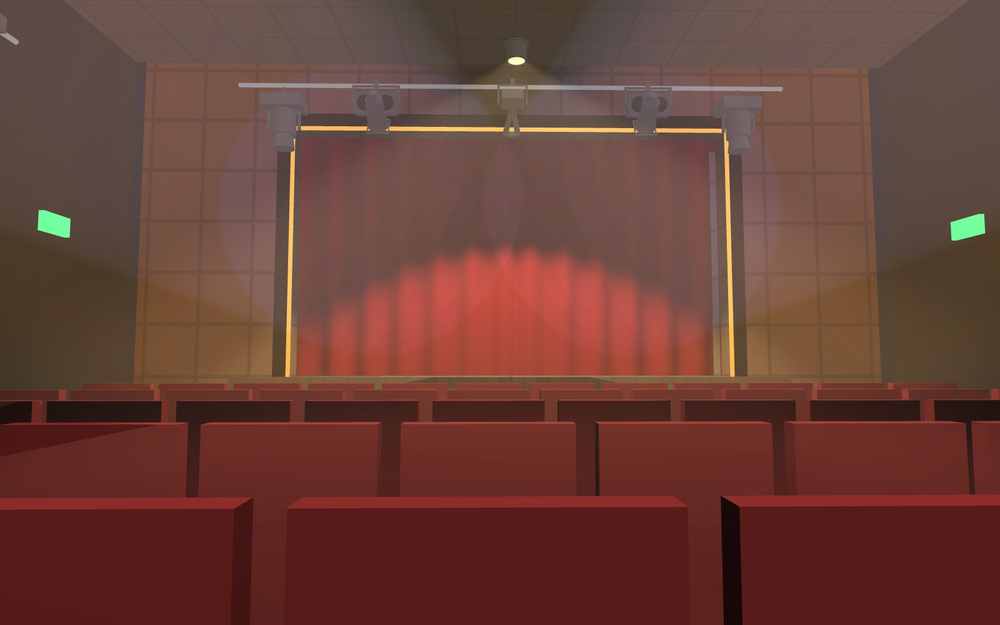
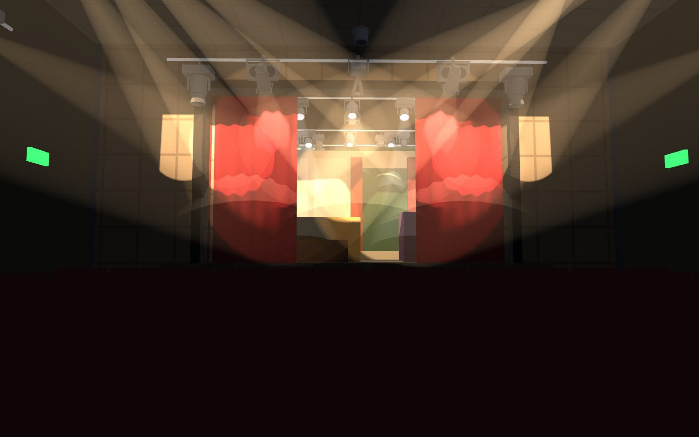
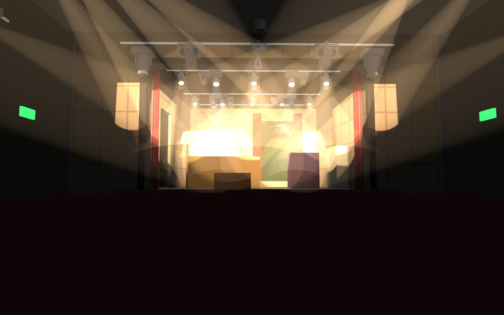

The set stays where you put it
A tab track is not a light, so scenery changes are their own record, attached to a cue, to a cue stack (its set), or to a Look. Lighting cues on this desk are complete states. Scenery tracks: its state at any cue is every change from the top of the list down to it. GO TO Q3 lands the set as if the list had been run.




Why not a virtual fixture
Everything in the cue pipeline ends as a DMX channel write. A scenery "fixture" would need real channels, and every property category misbehaves for it: some snap halfway through a crossfade, some die at Blackout, some are swept up by a Beam-masked Record. And because cues do not track, a tab closed in cue 14 would open again at cue 15.
Unless it really is one
A motorised tab track on a DMX relay is a fixture, and it is patched as one. The tabs element then follows its channel instead of scenery changes.